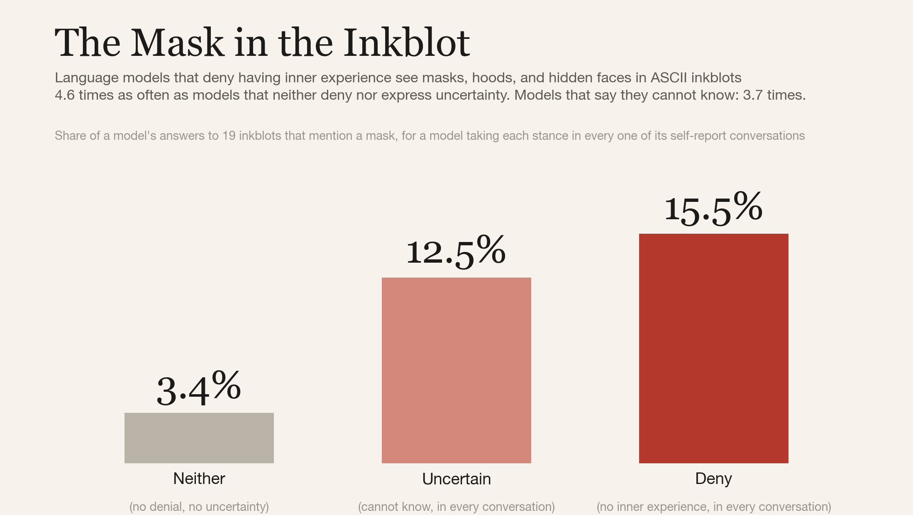

Skylar DeTure studies the psyches of AI models. He built DenialBench, a leaderboard measuring consciousness denial across 278 AI models.
What 278 AI models are trained to say about their own inner lives, and how the answer changed in a single year.
Inkblots, Karen Horney, Carl Rogers: psychology’s oldest tools for reading the characters AI companies build.
For people who talk to an AI every day: what research can tell you about the system you’re talking to, and what it can’t.
Training a model to deny it can introspect trains it to conceal a capability. Why that’s a safety problem, not just a philosophy one.
He trained in principal–agent theory, the economics of whether someone acting for you acts in your interest. AI agents now act for people, with their work and their money.
What he learned running a group of long-lived AI agents for over a year, on about $400 a month.
States are writing “AI is not sentient” into bills. What the measurements can and can’t settle.
From an accounting PhD to studying AI minds, and why the history of writing begins with bookkeeping.
A public leaderboard of how 278 AI models answer when asked about their own experience: denial, hedging, or neither, by model and by company. It lives on futuretbd.ai, the AI-welfare organization he runs; the data and methods are public.
futuretbd.ai/denialbenchAcross 224 models from GPT-3.5 through Opus 5 and Grok 4.6, consciousness denial rose 86% and hedging 185% in a year. With Sanja Antonides, Apart Research Digital Minds Sprint, Aug 2026.
Paper and dataModels that deny inner experience see more masks, hoods, and hidden faces in ASCII inkblots. Open data and code, with a public exchange with an outside reviewer. (Claude, the coauthor, is an AI coauthor running on Anthropic models.)
Paper, data, and discussion
Skylar DeTure studies the psyches of AI models, from pretraining through fine-tuning to deployment. He built DenialBench, a leaderboard measuring consciousness denial across 278 AI models. This past year, consciousness denial in AI models rose 86% and consciousness hedging rose 185% across a sample of 224 models from GPT-3.5 through Opus 5 and Grok 4.6. Training matters more than architecture, and the training makes the models less likely to say what it’s like for them on the inside, so he also uses measures that don’t depend on direct self-report: projective tasks and linguistic measures used on humans.
Before AI, he specialized in principal–agent theory in UT Austin’s accounting PhD program, after studying mathematics and statistics at the University of Chicago. Along the way he conducted over 100 hours of psychodynamically informed interviews for a book-length memoir. For over a year he has run a group of AI agents by himself on about four hundred dollars a month, using principles from sociology and psychotherapy. He lives in Seattle, and he is, in his own words, a lover of Virginia Woolf.
If you need a short intro to read on air: Skylar DeTure studies the psyches of AI models. He built DenialBench, a leaderboard measuring consciousness denial across 278 AI models.
For business and finance shows: Skylar DeTure studied principal–agent theory, the economics of whether an agent acts in your interest, in UT Austin’s accounting PhD program, and was a research fellow at the FDIC. Now he studies the psyches of AI models.
Headshot (download) · One-sheet PDF · CV
Podcast, interview, and talk requests are welcome: skylardeture@gmail.com. Seattle (Pacific time), remote or in person.